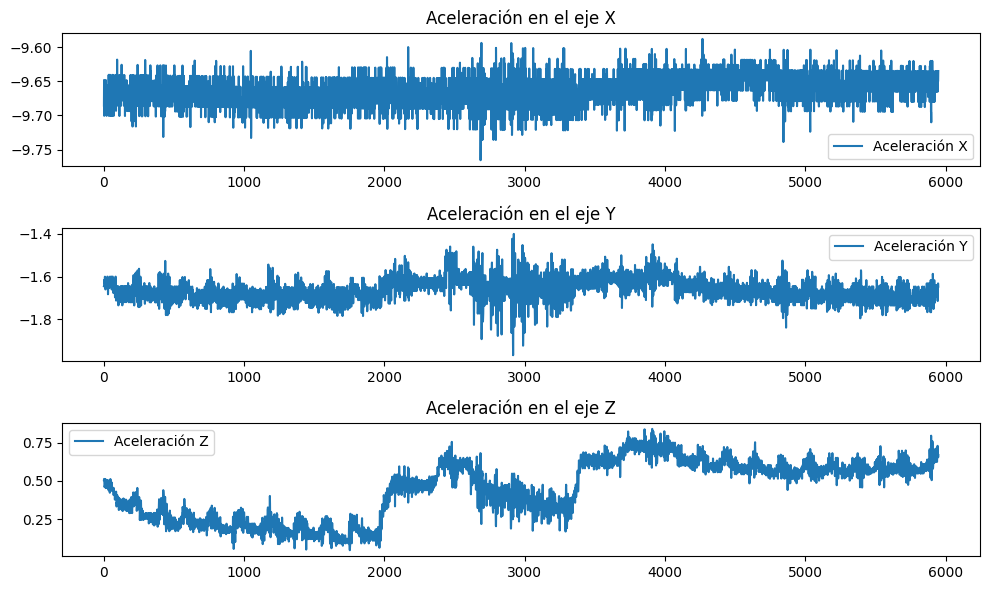
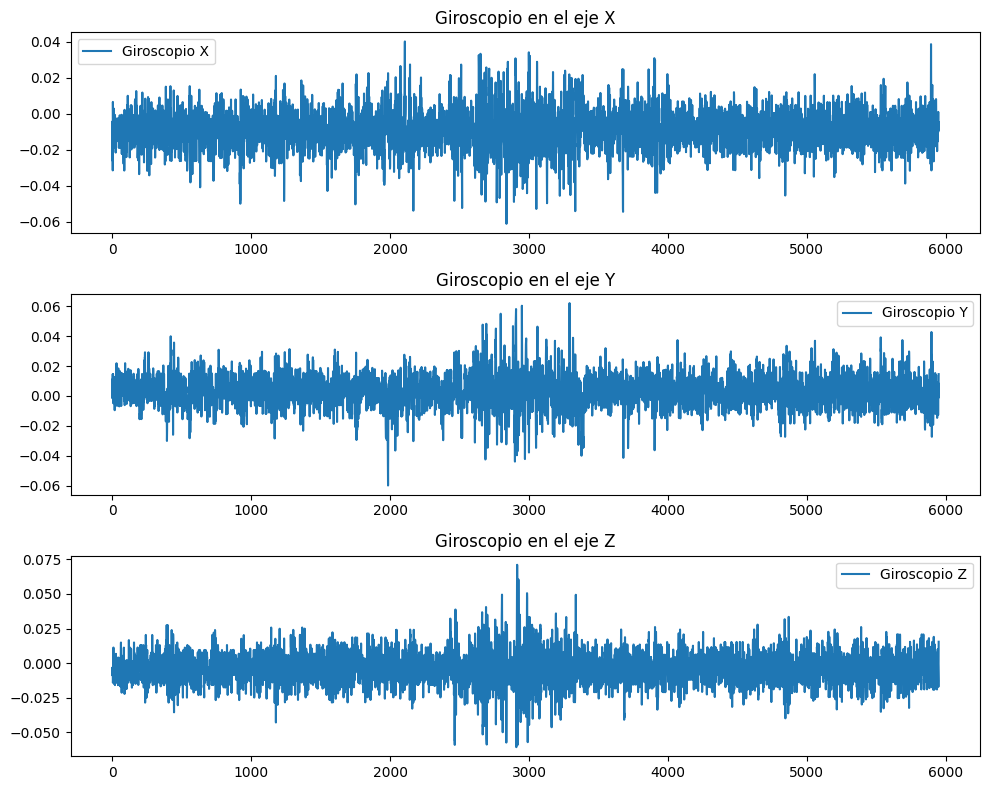
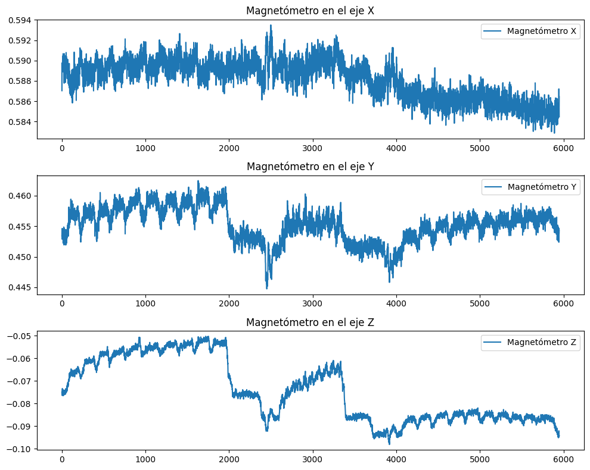
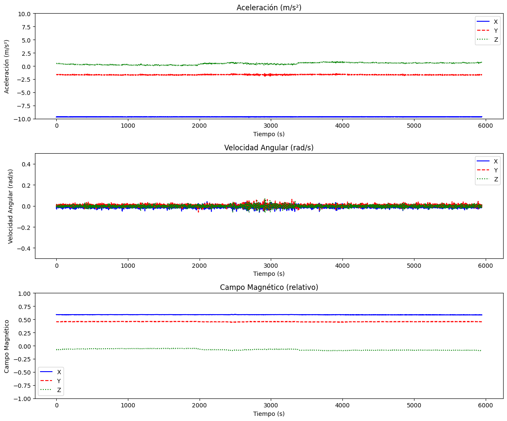

import os
import pandas as pd
def cargar_datos_por_serie(ruta_base):
# Crear un diccionario para almacenar los datos por sujeto, ejercicio y sensor
datos_por_serie = {}
# Recorrer cada sujeto (s1, s2, ...)
for sujeto in os.listdir(ruta_base):
ruta_sujeto = os.path.join(ruta_base, sujeto)
if os.path.isdir(ruta_sujeto):
datos_por_serie[sujeto] = {} # Crear una entrada para cada sujeto
# Recorrer cada ejercicio (e1, e2, ...) dentro de cada sujeto
for ejercicio in os.listdir(ruta_sujeto):
ruta_ejercicio = os.path.join(ruta_sujeto, ejercicio)
if os.path.isdir(ruta_ejercicio):
datos_por_serie[sujeto][ejercicio] = {} # Crear una entrada para cada ejercicio dentro del sujeto
# Recorrer cada sensor (u1, u2, ...) dentro de cada ejercicio
for sensor in os.listdir(ruta_ejercicio):
ruta_sensor = os.path.join(ruta_ejercicio, sensor, 'test.txt')
if os.path.exists(ruta_sensor):
# Leer los datos del archivo de prueba de cada sensor
df = pd.read_csv(ruta_sensor, sep=';')
# Almacenar los datos en el diccionario por sujeto, ejercicio y sensor
datos_por_serie[sujeto][ejercicio][sensor] = df
return datos_por_serie
# Ruta base donde se encuentran los archivos
ruta_base = '../datasets/physiotherapy_challenge'
# Cargar los datos organizados por sujeto, ejercicio y sensor
datos_organizados = cargar_datos_por_serie(ruta_base)
# Ejemplo: Acceder a los datos del sujeto 's1', ejercicio 'e1', sensor 'u1'
df_s1_e1_u1 = datos_organizados['s1']['e1']['u1']
print(df_s1_e1_u1.head()) # Mostrar las primeras filas de ese sensor en ese ejercicio y sujeto
time index acc_x acc_y acc_z gyr_x gyr_y gyr_z \
0 1 -9.685645 -1.645149 0.505022 -0.020696 0.009202 -0.008566
1 2 -9.648184 -1.645353 0.513125 -0.008165 -0.001407 -0.003256
2 3 -9.700570 -1.615223 0.512321 -0.004447 0.011059 -0.008589
3 4 -9.685627 -1.630183 0.497591 -0.026110 0.009183 -0.008554
4 5 -9.655697 -1.630194 0.460742 -0.008109 0.001231 -0.005950
mag_x mag_y mag_z
0 0.589728 0.453403 -0.075234
1 0.587024 0.453644 -0.075593
2 0.589691 0.454598 -0.075525
3 0.589240 0.452864 -0.074705
4 0.589647 0.452882 -0.076429
import matplotlib.pyplot as plt
# Graficar aceleración en X, Y y Z
plt.figure(figsize=(10, 6))
plt.subplot(3, 1, 1)
plt.plot(df_s1_e1_u1['acc_x'], label='Aceleración X')
plt.title('Aceleración en el eje X')
plt.legend()
plt.subplot(3, 1, 2)
plt.plot(df_s1_e1_u1['acc_y'], label='Aceleración Y')
plt.title('Aceleración en el eje Y')
plt.legend()
plt.subplot(3, 1, 3)
plt.plot(df_s1_e1_u1['acc_z'], label='Aceleración Z')
plt.title('Aceleración en el eje Z')
plt.legend()
plt.tight_layout()
plt.show()

# Graficar las series de tiempo para giroscopio y magnetómetro (gyr_x, gyr_y, gyr_z, mag_x, mag_y, mag_z)
plt.figure(figsize=(10, 8))
# Giroscopio
plt.subplot(3, 1, 1)
plt.plot(df_s1_e1_u1['gyr_x'], label='Giroscopio X')
plt.title('Giroscopio en el eje X')
plt.legend()
plt.subplot(3, 1, 2)
plt.plot(df_s1_e1_u1['gyr_y'], label='Giroscopio Y')
plt.title('Giroscopio en el eje Y')
plt.legend()
plt.subplot(3, 1, 3)
plt.plot(df_s1_e1_u1['gyr_z'], label='Giroscopio Z')
plt.title('Giroscopio en el eje Z')
plt.legend()
plt.tight_layout()
plt.show()

# Graficar magnetómetro
plt.figure(figsize=(10, 8))
# Magnetómetro
plt.subplot(3, 1, 1)
plt.plot(df_s1_e1_u1['mag_x'], label='Magnetómetro X')
plt.title('Magnetómetro en el eje X')
plt.legend()
plt.subplot(3, 1, 2)
plt.plot(df_s1_e1_u1['mag_y'], label='Magnetómetro Y')
plt.title('Magnetómetro en el eje Y')
plt.legend()
plt.subplot(3, 1, 3)
plt.plot(df_s1_e1_u1['mag_z'], label='Magnetómetro Z')
plt.title('Magnetómetro en el eje Z')
plt.legend()
plt.tight_layout()
plt.show()

# Ejemplo: Acceder a los datos del sujeto 's1', ejercicio 'e1', sensor 'u1'
df_s3_e1_u2 = datos_organizados['s1']['e1']['u1']
print(df_s3_e1_u2.head()) # Mostrar las primeras filas de ese sensor en ese ejercicio y sujeto
time index acc_x acc_y acc_z gyr_x gyr_y gyr_z \
0 1 -9.685645 -1.645149 0.505022 -0.020696 0.009202 -0.008566
1 2 -9.648184 -1.645353 0.513125 -0.008165 -0.001407 -0.003256
2 3 -9.700570 -1.615223 0.512321 -0.004447 0.011059 -0.008589
3 4 -9.685627 -1.630183 0.497591 -0.026110 0.009183 -0.008554
4 5 -9.655697 -1.630194 0.460742 -0.008109 0.001231 -0.005950
mag_x mag_y mag_z
0 0.589728 0.453403 -0.075234
1 0.587024 0.453644 -0.075593
2 0.589691 0.454598 -0.075525
3 0.589240 0.452864 -0.074705
4 0.589647 0.452882 -0.076429
# Ajustar las escalas de los gráficos y mejorar los estilos
# Crear la figura para 3 subgráficos
plt.figure(figsize=(12, 10))
# Aceleración con escalas ajustadas
plt.subplot(3, 1, 1)
plt.plot(df_s3_e1_u2['acc_x'], label='X', color='blue')
plt.plot(df_s3_e1_u2['acc_y'], label='Y', color='red', linestyle='--')
plt.plot(df_s3_e1_u2['acc_z'], label='Z', color='green', linestyle=':')
plt.title('Aceleración (m/s²)')
plt.ylim([-10, 10]) # Ajustar el límite del eje Y
plt.xlabel('Tiempo (s)')
plt.ylabel('Aceleración (m/s²)')
plt.legend()
# Velocidad Angular - Giroscopio con ajuste de escala
plt.subplot(3, 1, 2)
plt.plot(df_s3_e1_u2['gyr_x'], label='X', color='blue')
plt.plot(df_s3_e1_u2['gyr_y'], label='Y', color='red', linestyle='--')
plt.plot(df_s3_e1_u2['gyr_z'], label='Z', color='green', linestyle=':')
plt.title('Velocidad Angular (rad/s)')
plt.ylim([-0.5, 0.5]) # Ajustar el límite del eje Y
plt.xlabel('Tiempo (s)')
plt.ylabel('Velocidad Angular (rad/s)')
plt.legend()
# Campo Magnético con ajuste de escala
plt.subplot(3, 1, 3)
plt.plot(df_s3_e1_u2['mag_x'], label='X', color='blue')
plt.plot(df_s3_e1_u2['mag_y'], label='Y', color='red', linestyle='--')
plt.plot(df_s3_e1_u2['mag_z'], label='Z', color='green', linestyle=':')
plt.title('Campo Magnético (relativo)')
plt.ylim([-1, 1]) # Ajustar el límite del eje Y
plt.xlabel('Tiempo (s)')
plt.ylabel('Campo Magnético')
plt.legend()
plt.tight_layout()
plt.show()
